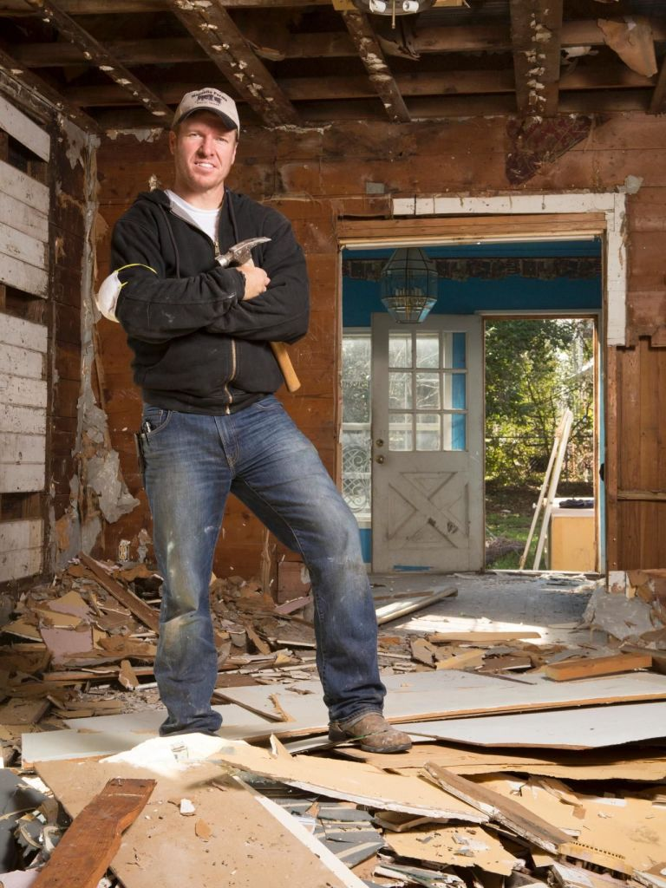

Role Models are very important in life. A role model is someone whom you look up to for guidance, motivation, knowledge, and information. I believe that a role model does not just have to be a famous celebrity or someone who is very successful, rather someone who has perfected their craft, and can be looked towards as a mentor. A few of my role models are people who have worked very hard in their lives and have found success because of their hard work. Chip Gaines is a real estate developer who has created a very successful real estate business with his wife which is very inspiring to me. Donald Trump is probably the most famous real estate developer, and has accomplished tasks that many people said he could never do. Finally, my boss is a man that has literally started from the bottom of his craft and has worked tirelessly to become successful. My boss started at an average construction job, entered real estate at a young age, and has worked for many years to be a successful real estate developer, and has accomplished just that. These are just a few of the people whom I look up too. Each one of these role models values hard work and understand what it takes to become successful. 